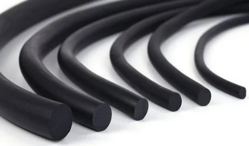

Rubber Cord – Complete Guide
What is a Rubber Cord?
Rubber cord is a solid, round-profile elastomeric product commonly used for sealing, gasketing, and insulation in a wide range of industrial applications. It is often used to create custom-sized O-rings and gaskets by cutting to length and joining the ends. Rubber cords come in various materials to suit specific environmental, chemical, and mechanical conditions.
Main Functions
- Used as a sealing material in static and dynamic applications
- Provides cushioning and vibration dampening
- Acts as a barrier to prevent ingress of dust, moisture, air, or chemicals
- Serves as raw material for making custom O-rings or seals
Applications
- Hydraulic and pneumatic sealing systems
- Automotive door and window seals
- Electrical enclosure gasketing
- HVAC and plumbing systems
- Custom fabrication of seals in maintenance and repair tasks
- Food-grade and pharmaceutical equipment (with FDA-approved cords)
Common Materials
- NBR (Nitrile): Good resistance to oils, fuels, and greases
- EPDM: Excellent weather, ozone, and water resistance
- Silicone: High-temperature resistance and FDA-compliant options
- Viton® (FKM): Premium chemical and heat resistance
- Natural Rubber: High elasticity and abrasion resistance
Types of Rubber Cord
- Hollow Rubber Cord: Lightweight and compressible; ideal for low-pressure seals and soft closures
- Square Section Cord: Offers flat surface contact; used in custom gasket applications
- Foam/Sponge Rubber Cord: Soft, compressible cord for cushioning, insulation, and low-pressure sealing
- FDA-Grade Rubber Cord: Food-safe materials like white Silicone, used in food and pharmaceutical industries
- High-Temperature Rubber Cord: Made from materials like Viton® or Silicone for extreme environments
- Chemical-Resistant Cord: Designed for contact with aggressive chemicals (typically Viton®, EPDM)
High-Temperature Rubber Cord

Chemical-Resistant Cord
Sizes and Customization
- Available in standard diameters from 1 mm to 50 mm
- Custom cross-sections (e.g., square, hollow) available on request
- Can be cut and joined into O-rings using adhesives or vulcanizing
- Available in continuous rolls or precut lengths
Advantages
- Highly flexible and easy to install
- Wide range of material options for different environments
- Economical and versatile sealing solution
- Reusable and easy to store or transport
- Customizable for non-standard or emergency repairs
Selection Tips
- Choose material based on temperature, media, and UV exposure
- Ensure proper cord diameter for the groove or channel
- Use compatible adhesive or vulcanizing solution for joining ends
- Check for certifications (e.g., FDA, RoHS) if required
Conclusion
Rubber cords are an essential, multipurpose sealing material used across a wide spectrum of industries. With options in material, size, and hardness, they provide reliable sealing, cushioning, and flexibility in both standard and custom applications. Proper selection and use can ensure efficient performance and reduce downtime.